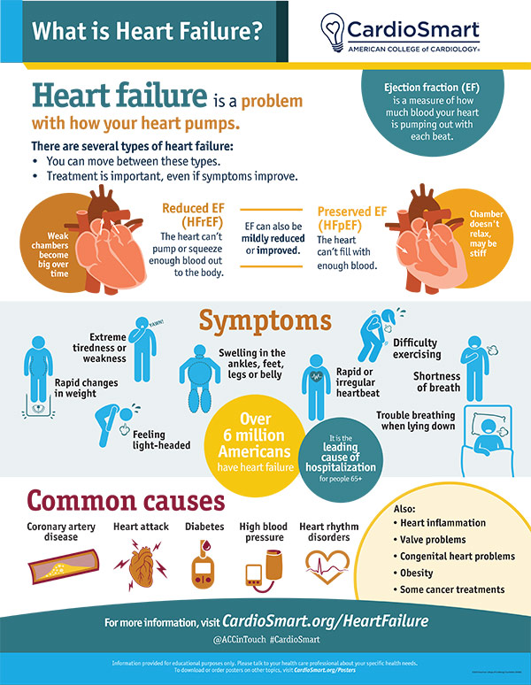

Understanding Congestive Heart Failure
Heart failure means your heart is not pumping blood as well as your body needs — either because it has grown too weak to pump, or because it has grown too stiff to fill properly. It does not mean your heart has stopped or is about to stop. More than 6 million adults in the United States live with heart failure, and with modern treatment many of them live full, active lives.
The Types of Heart Failure
The left side of your heart pumps oxygen-rich blood to your body; the right side pumps blood to the lungs to pick up oxygen. Doctors classify heart failure mainly by the ejection fraction — the percentage of blood the main pumping chamber (the left ventricle) pushes out with each beat. A healthy heart pumps out roughly 50% or more of the blood it holds.
| Type | What happens | Typical ejection fraction |
|---|---|---|
| Heart failure with reduced ejection fraction (HFrEF) | The pumping muscle is weak and can't push enough blood out to the body. | 40% or lower |
| Heart failure with preserved ejection fraction (HFpEF) | The heart muscle is stiff and can't fully relax and fill, so less blood is available to pump. | 50% or higher |
| Borderline (HFmrEF) | In between — mildly reduced pumping. | 41–49% |
| Right-sided heart failure | The right side can't pump blood to the lungs efficiently, causing blood to back up in the body (swelling, congestion). | — |
Many people eventually have a mix of findings; left-sided failure is the most common cause of right-sided failure.
How Heart Failure Develops
Heart failure is usually the end result of another condition that injures or overworks the heart muscle over years:
- Coronary artery disease and heart attack: blocked heart arteries starve the muscle of oxygen; a heart attack kills muscle outright, leaving a weaker pump.
- Long-standing high blood pressure: pumping against high pressure thickens the muscle until it becomes stiff and then weak — the classic road to HFpEF.
- Heart valve disease: narrowed or leaky valves force the heart to work harder.
- Cardiomyopathy: direct disease of the muscle from genetics, alcohol, certain drugs or chemotherapy, or infection.
- Irregular heart rhythms such as atrial fibrillation, and conditions like diabetes, obesity, and sleep apnea, which both raise the risk and worsen outcomes.
When forward pumping falls behind, two things happen: organs get less blood (fatigue, weakness, trouble concentrating), and blood and fluid back up — into the lungs (breathlessness, cough, trouble lying flat) or into the body (swelling of the feet, legs, and abdomen, weight gain). That congestion is what the word "congestive" refers to. The kidneys respond by holding salt and water, which adds more fluid to an already overloaded system — a vicious cycle that treatment is designed to break.
Why It Matters to Diagnose and Treat It
Heart failure is a chronic condition without a cure, and it tends to worsen over time if untreated. It can lead to irregular heart rhythms, sudden cardiac arrest, and damage to the liver and kidneys. Yet it is one of the most treatable conditions in cardiology: the right combination of medicines, devices, and lifestyle changes can ease symptoms dramatically, keep people out of the hospital, and extend life. The earlier it is found, the more muscle and function there is to protect.
Symptoms
Early on, you may notice nothing at all. As the heart weakens, typical symptoms include:
- Shortness of breath — first with stairs or activity, later even at rest or when lying flat (some people wake up gasping and need to sleep on extra pillows).
- Fatigue and weakness — extreme tiredness even after rest.
- Swelling (edema) in the feet, ankles, legs, or abdomen, and rapid weight gain from fluid retention.
- Persistent cough or wheezing, sometimes with pink-tinged mucus.
- Reduced appetite, nausea, and trouble concentrating.
- A racing or irregular heartbeat.

How It Is Diagnosed
Diagnosis starts with your story and a physical exam, and is usually confirmed with a few key tests:
- Blood tests: kidney, liver, and thyroid function, blood counts, and BNP or NT-proBNP — a hormone that rises when the heart is under strain.
- Echocardiogram (echo): an ultrasound of the heart that shows its structure, valve function, and ejection fraction — the cornerstone test that classifies which type of heart failure you have.
- Electrocardiogram (EKG) and sometimes a wearable Holter or event monitor to look for irregular rhythms.
- Stress testing, cardiac CT or MRI to look for causes such as coronary disease, scarring, or inflammation.
- Cardiac catheterization with angiography when blocked arteries are suspected, since restoring blood flow can improve heart function.
- Chest X-ray to look for fluid in the lungs and the size of the heart.
How It Is Treated
Everyday self-care
- Weigh yourself daily at the same time and report a gain of 2–3 pounds in a day or 5 pounds in a week — often the first sign of fluid buildup.
- Limit sodium (usually under about 2,000–2,300 mg daily); your doctor may also set a fluid limit.
- Stay active as directed — supervised cardiac rehabilitation and regular walking improve symptoms and stamina; check with your doctor first.
- Take medicines exactly as prescribed, keep a current medication list, and never stop a heart-failure medicine on your own.
- Manage related conditions: blood pressure, diabetes, sleep apnea, and avoid smoking and heavy alcohol.
- Get vaccinated against flu and pneumonia — illness can trigger heart failure flare-ups.
Medications
Most people with heart failure take several medicines that work together:
- Diuretics ("water pills") and aldosterone antagonists (such as spironolactone) to remove excess salt and fluid and ease congestion.
- ACE inhibitors or ARBs to relax blood vessels so the heart doesn't have to pump as hard.
- Beta-blockers to slow the heart and protect it from the effects of constant adrenaline, which over time strengthens the pump in reduced-ejection-fraction heart failure.
- SGLT2 inhibitors, a newer class of medicine proven to reduce hospitalization and death in heart failure.
- Other medicines (for example, ivabradine or digoxin) may be added for specific situations.
Devices and procedures
- Biventricular pacemaker (cardiac resynchronization therapy): helps both sides of the heart beat in sync.
- Implantable cardioverter-defibrillator (ICD): monitors the rhythm and corrects dangerous ones that could cause sudden cardiac arrest.
- Heart surgery or angioplasty to fix valves or restore blood flow when coronary disease or a valve problem is the cause.
- Left ventricular assist device (LVAD) as a bridge to transplant or longer-term support, and heart transplant for carefully selected patients whose failure is life-threatening despite all other treatments.
When to seek urgent care
Call the office if you gain 2–3 pounds overnight or 5 pounds in a week, or if swelling or breathlessness is creeping up. Call 911 for severe difficulty breathing at rest, chest pain, fainting, confusion, or coughing up pink, frothy mucus.
Key Takeaways
- Heart failure means "weak or stiff pump," not "heart stop."
- It is common, serious if ignored, and very treatable.
- Diagnosis centers on symptoms, BNP blood testing, and an echocardiogram with ejection fraction.
- Treatment combines daily self-care (weights, sodium, activity) with several protective medicines.
- Devices and surgery help selected patients live longer and better.
Reliable Sources
- NHLBI, Heart Failure (with linked Causes, Symptoms, Diagnosis, and Treatment pages)
- CDC, About Heart Failure
- CardioSmart (American College of Cardiology), Heart Failure — infographic
This page is for general education only and does not replace advice from your doctor. If you have questions about your own symptoms or treatment, please contact the office.